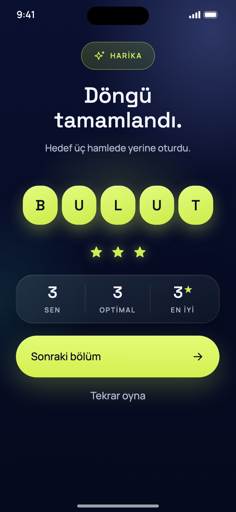
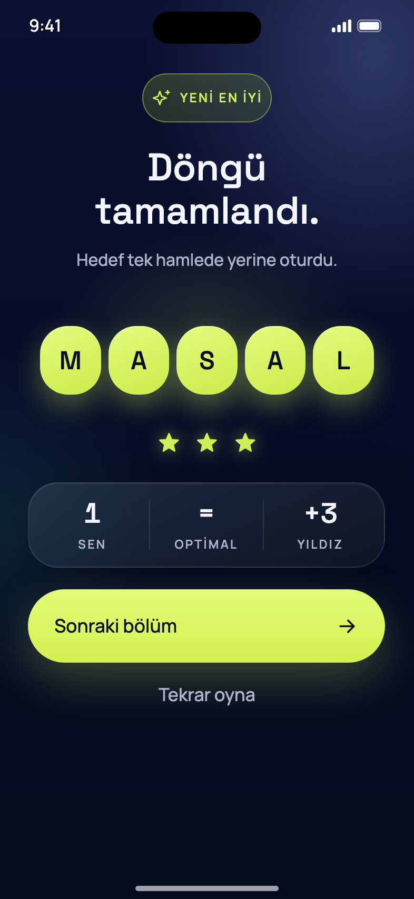

Çözünce üç sayı gösteriyoruz. Turuncu kutuya bak. İkisinde de ilk iki sayı aynı (SEN = kaç hamlede çözdün, OPTİMAL = en iyi ihtimal kaç hamle). Fark üçüncü sayıda.

Üçüncü sayı senin şimdiye kadarki en iyi sonucun. Neden önerim: oyundaki “kişisel rekor” özelliği ve “YENİ REKOR” mesajı bununla çalışıyor; kaybolmasın.

Üçüncü sayı bu bölümde kazandığın yıldız. Bu seçilirse kişisel rekor gösterimi sonuç ekranından kalkar (oyunun “rekor” özelliği başka bir yere taşınmalı).